OSS · MIT · OpenStreetMap (ODbL)
ここの地図を、
手元に。
地球ぜんぶは要りません。必要な範囲だけ切り出せば、 写真 1 枚より小さくなります——舞浜一帯で 1.9 MB。 手元にあるので、つながらなくても出ます。 API キーも、従量課金も、地図サーバーもありません。
まだタイルの配信元がありません。apps/demo/config.js に設定します。
<mmj-map tiles="./tiles/demo.pmtiles"
style-url="./styles/modern-dark.json"
center="135.5023,34.6937" zoom="12"></mmj-map>JavaScript は 1 行も書いていません。地図の操作は指 2 本 / Ctrl+ホイールです （この頁は読み物なので、指 1 本ではページが送れるようにしてあります）。
- API キー
- 0
- 地図サーバー
- 0 台
- 舞浜一帯の地図
- 1.9 MB
- 会場ひとそろい
- 3.6 MB
- 手書きスタイル
- 6 枚
できること
どれも実際に動いている画面です。押すと開きます。
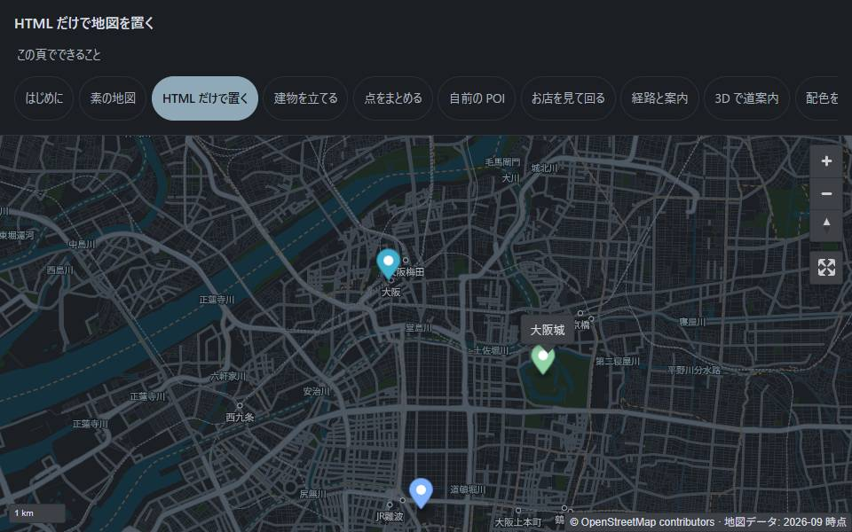
HTML だけで置く属性を書くだけ。JavaScript は要りません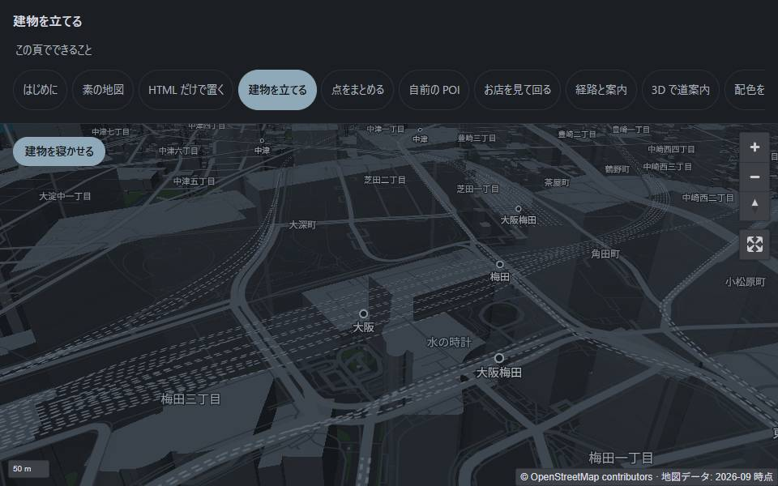
建物を立てる属性 1 つ。転送量は 1 バイトも増えません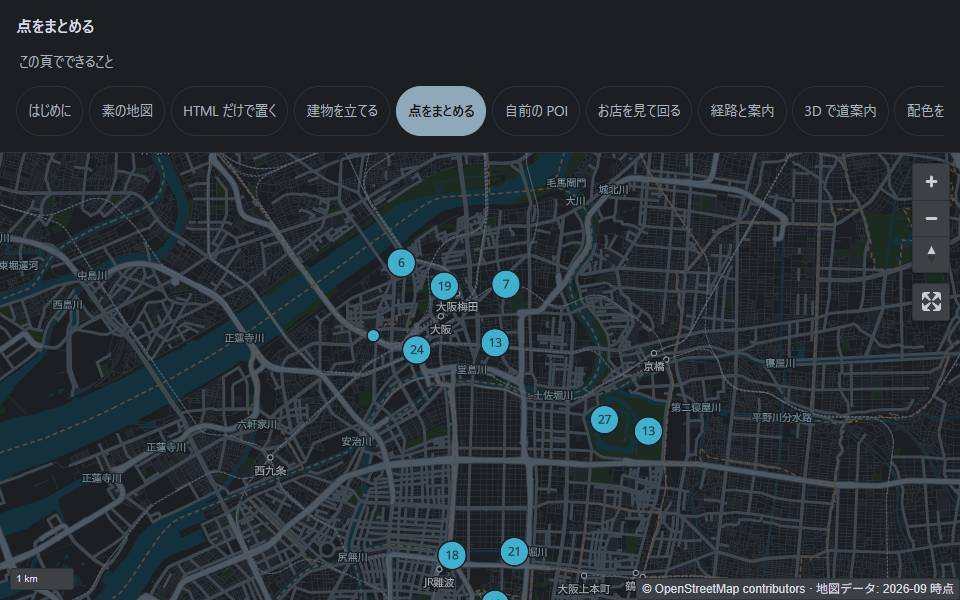
点をまとめる多い点を、寄ると解けるまとまりに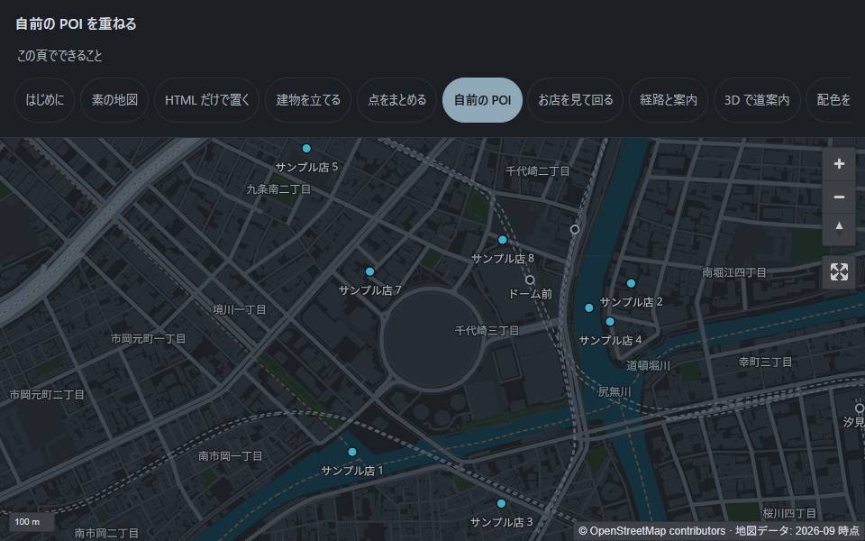
自前の POIベース地図に触らず、自分のデータを重ねる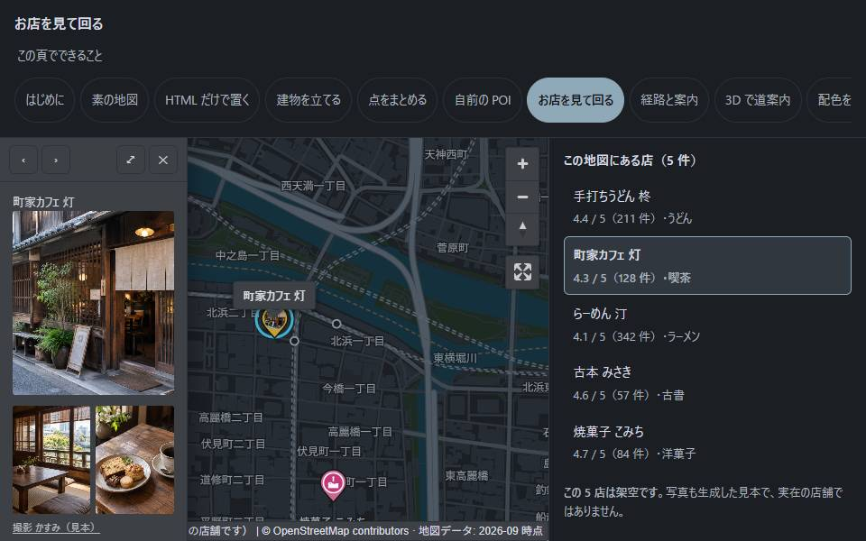
お店を見て回る写真・星・長文をカードで。写真には撮影者の表記を添えられます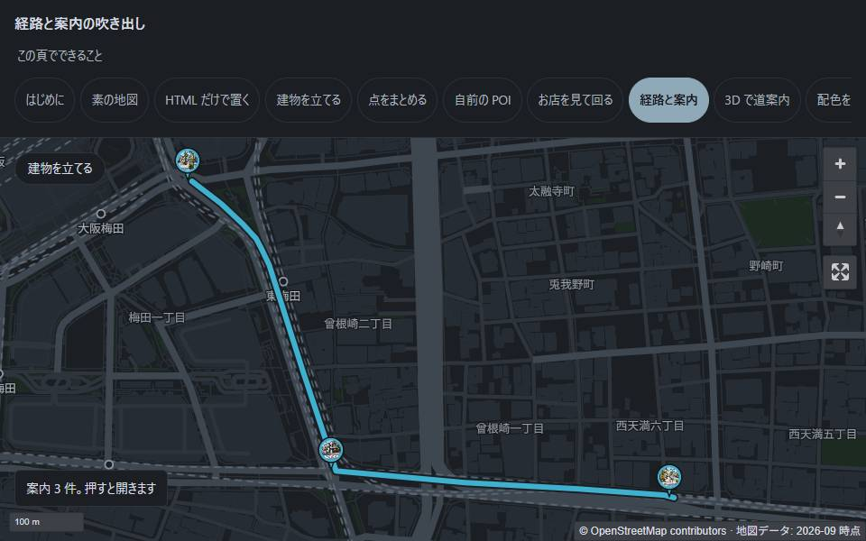
経路と案内渡された経路を描き、曲がる地点に吹き出し。写真がある点は、ピンの中に写真が出ます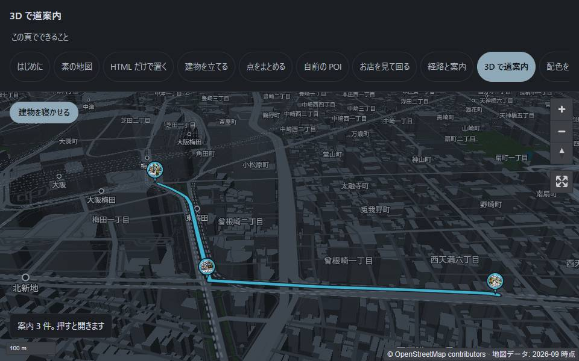
3D で道案内建物を立てたまま案内。知らない街では建物の形のほうが速い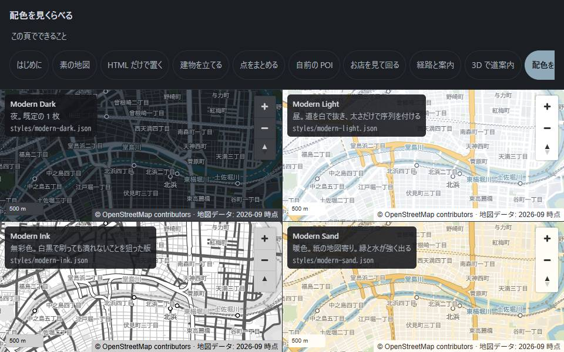
配色を見くらべる同じタイル・同じ構成で、色だけ違う 6 枚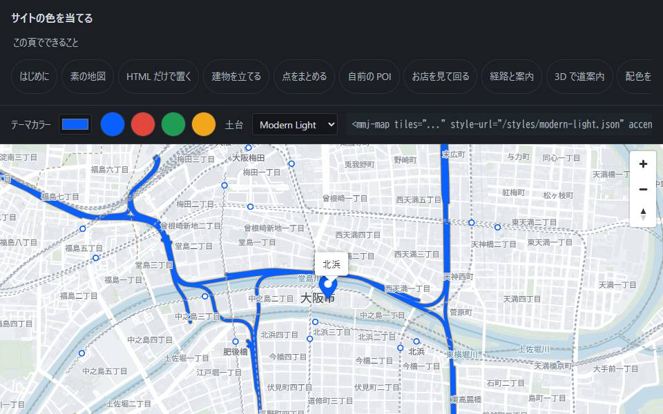
サイトの色を当てるテーマカラーを 1 色渡すだけ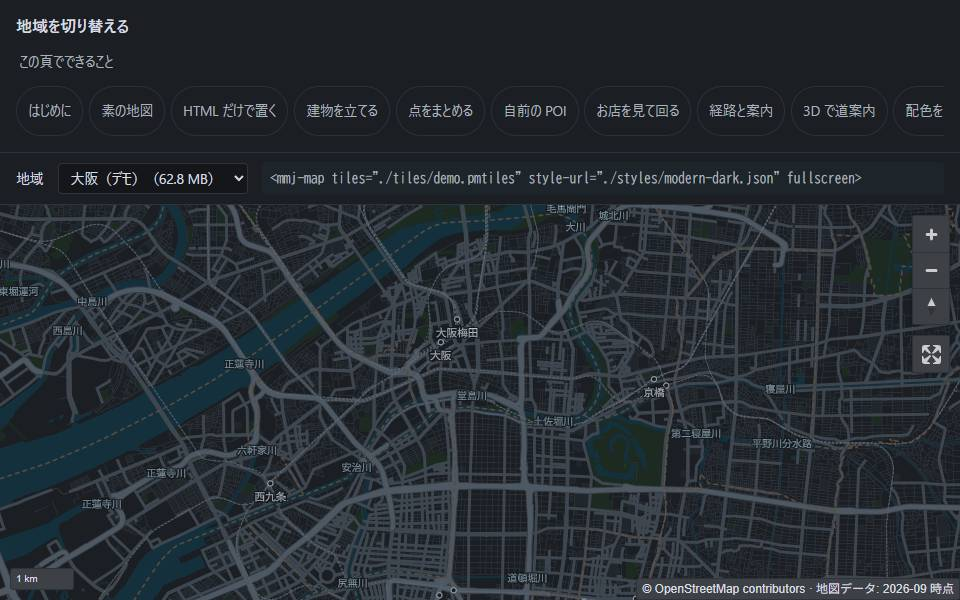
地域を切り替える大阪・ハノイ・ニューヨーク・ソウルほか 8 地域。コードは変わりません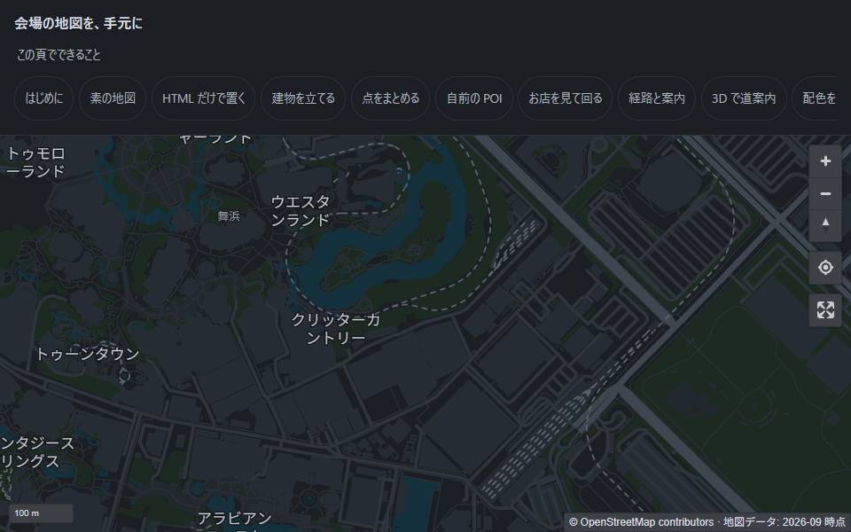
会場の地図舞浜一帯で 1.9 MB。写真 1 枚より小さい。現在地も出ます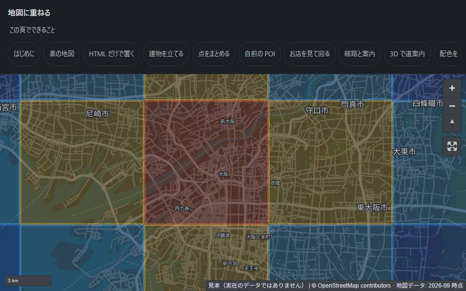
地図に重ねる雨雲・ハザード・地盤・空中写真。どれもラスタタイルなので 1 つで乗ります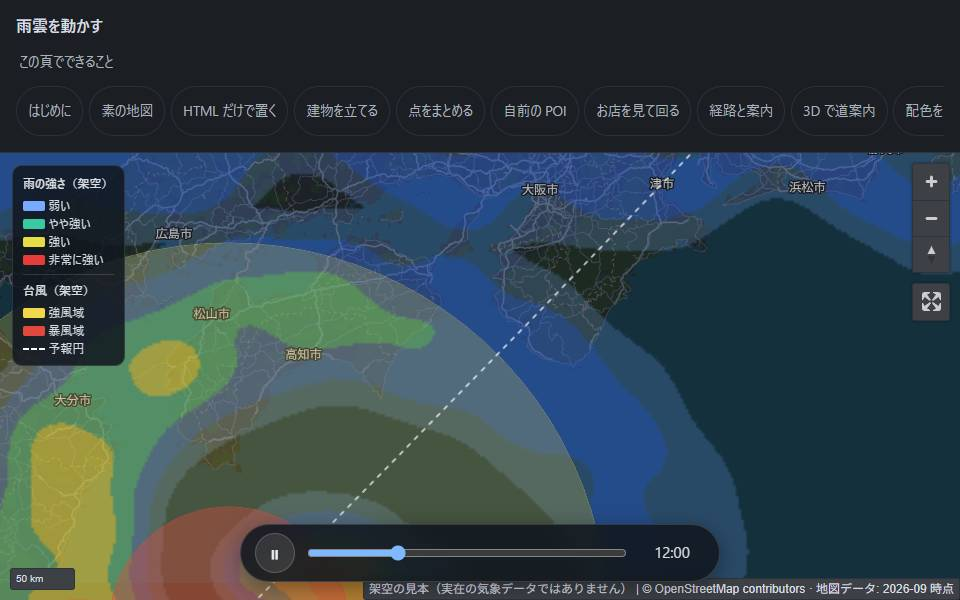
雨雲を動かす時刻ごとのタイルを並べて再生。静的配信だけで動きます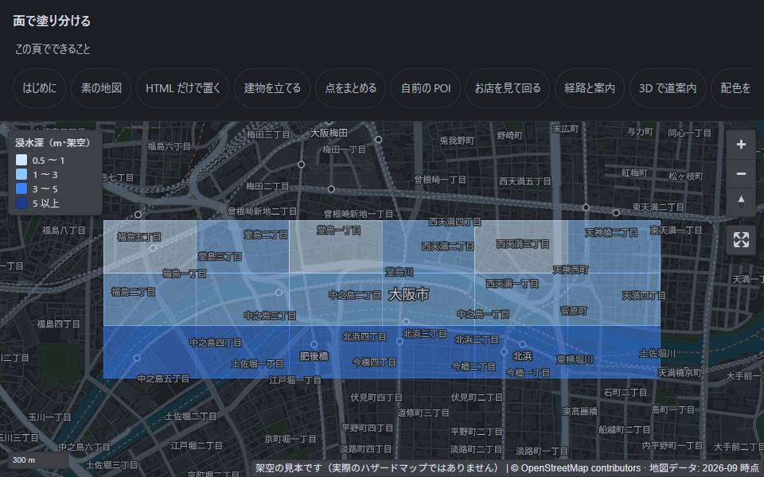
面で塗り分ける浸水深・地盤・震度。色は置く側が渡します（MMJ は判断しません）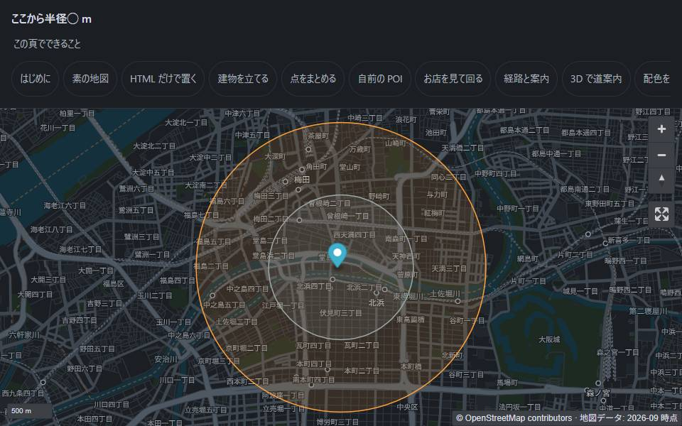
半径で囲むここから 800 m。外部サービスもデータも要りません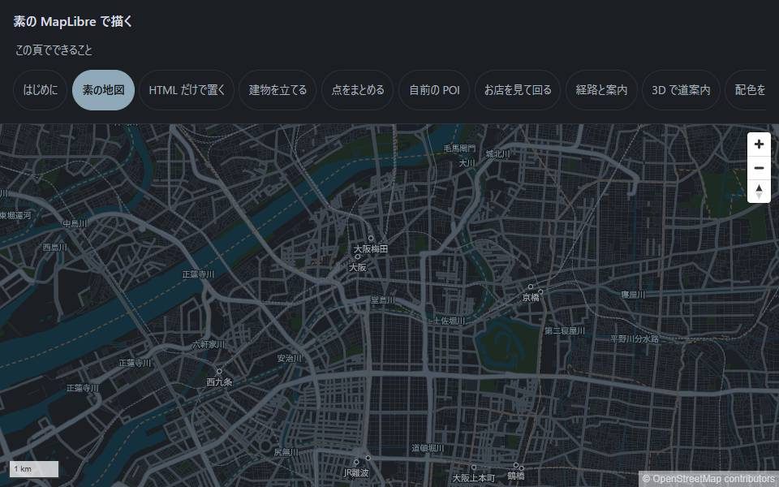
素の地図部品を使わず、MapLibre と PMTiles だけなぜ
ウェブに出せる地図は、たいてい他人の地図を、他人の見た目で、他人のメーターで 使うことになります。商用 API は鍵と従量課金が要り、OSM の公式タイルサーバーは 利用方針で商用と大量アクセスを認めていません。 自前でタイルサーバーを立てれば動きますが、今度はタイルサーバーの運用が仕事に加わります。
MMJ は、データは借りて、表現だけを持ちます。
- ベースタイルは Protomaps の日次プラネットビルドから、 必要な範囲だけを切り出して 1 つの PMTiles ファイルにします。 タイル生成パイプラインは自作しません
- スタイルは手書きです。生成物ではなく作品として扱います
- サーバーを立てません。静的配信と HTTP Range だけでデプロイが完結します
配る単位
地図というと「日本の地図」「世界の地図」を思い浮かべますが、 ほとんどの用途で必要なのは「ここ」だけです。 そして範囲を絞ると、大きさが桁で変わります。
| 範囲 | 大きさ | 切り出し |
|---|---|---|
| 舞浜一帯（会場ひとつ） | 1.9 MB | 31 リクエスト・9.5 秒 |
| ハノイ中心部 | 10.9 MB | 45 リクエスト・12.5 秒 |
| 大阪（広域 ＋ 市街） | 62.8 MB | — |
| 日本全土 | 2.6 GB | — |
惑星は端末に置けません。会場は置けます。
「世界中のタイルは持てない」は MMJ の制約でしたが、範囲を絞る用途では前提になります。 会場・駅・学校がそれぞれ自分の範囲だけを持てば、アクセスが 1 か所に集まりません。 混雑した場所で地図が出ないのは、たいてい全員が同じ配信元を見ているからです。
会場の地図は、通信を切っても出ます。 一度開けば、地図・ラベルの字・描く道具（合計 3.6 MB）が端末に残るためです。 これは会場ほどの範囲だからできることで、日本全土では同じことはできません。
現在地は衛星から測るので、通信が無くても出ます
（locate を付けたときだけ。付けない限り位置情報は要求しません）。
ただし通信が無いと初回の測位に数十秒かかることがあります。
使い方
要るものは 3 つだけです。そのうち 2 つは MMJ が配っています。
-
部品を入れる
pnpm add @mmj-map/elements素の ES モジュールで、ビルド工程はありません。コピーでも動きます。
-
スタイルを選ぶ
6 枚から 1 枚をページの隣へ置きます。 サイトのテーマカラーを 1 色渡すだけでも変わります。
-
タイルを用意する
pnpm tiles:extract -- demoここだけは自分で置きます。配信されたタイルはありません。 上流 138 GB のうち必要な範囲だけを HTTP Range で取るので、 1 地域あたり数十秒・数十 MB です。
手順の詳細は 導入手順 に、 English / 日本語 / 繁體中文 / 简体中文 / Tiếng Việt で置いてあります。
作らないもの
- タイルサーバー。その fork も作りません
- レンダリングエンジン。それは MapLibre の仕事です
- ジオコーダ・経路探索・地点データベース。 経路は描きますが、計算はしません
- 地図の費用を下げる道具ではありません。 座標の取得元が「その提供者の地図の上に表示すること」を条件にしている場合、 ベース地図だけを差し替える自由はありません